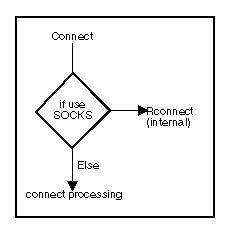

The connect() socket call requests a connection to a remote host.
Syntax
#include <types.h> #include <sys\socket.h> int connect(s, name, namelen) int s; struct sockaddr *name; int namelen;
Parameters
s
Description
The following diagram illustrates connect() processing: connect ( )Processing

If you are using a SOCKS server, connect() calls Rconnect(). See Socket Secure Support for information about SOCKS.
Stream or sequenced packet sockets: The connect() call performs two tasks when called for a stream or sequenced packet socket:
This call is used by the client side of socket-based applications to establish a connection with a server. The remote server must have a passive open pending. This means the server must successfully call bind() and listen(); otherwise, connect() returns a value of -1 and the error value is set to SOCECONNREFUSED. If you are using a SOCKS server and the connection is rejected by the SOCKS server, the return code will be SOCECONNREFUSED.
In the internet communication domain, a timeout occurs if a connection to the remote host is not successful within 75 seconds (1 minute and 15 seconds). There is no timeout for Local IPC. In the NetBIOS communication domain, a timeout occurs if a connection to the host is not successful within the time defined by the NetBIOS protocol parameters Transmit Timer multiplied by Transmit Retry.
If s is in blocking mode, the connect() call blocks the caller until the connection is established or until an error is received. If the socket is in nonblocking mode, and the connection was successfully initiated, connect() returns a value of -1 and sets the error value to SOCEINPROGRESS. The caller can test the completion of the connection setup by calling:
Datagram or raw sockets: The connect() call specifies the destination peer address when called for a datagram or raw socket. Normally, datagram and raw sockets use connectionless data transfer calls such as sendto() and recvfrom(). However, applications can call connect() to specify and store the destination peer address for this socket. The system will then know which address to send data to on this socket. This method of communication allows datagram and raw sockets to be connected. However, data is still not guaranteed to be delivered. Thus the normal features of connectionless mode sockets are maintained. The address is remembered until another connect() call is made. This permits the use of readv(), recv(), send(), and writev(), which are usually reserved for connection-oriented sockets. The application can still use sendto(), recvfrom(), sendmsg(), and recvmsg(). The advantage of calling connect() and being connected is that the destination peer address does not have to be specified for all datagrams sent.
Datagram and raw sockets can call connect() multiple times. The application can reset their destination address by specifying a new address on the connect() call. In addition, the socket can be returned to operate in a connectionless mode by calling connect() with a null destination address. The null address is created by zeroing the sockaddr structure and only setting the address family field. The call to connect will return a value of -1, indicating that the connection to the null address cannot be established. Calling sock_errno() will return SOCEADDRNOTAVAIL. For more information on connecting datagram sockets, see Description for sendto().
Return Values
The value 0 indicates success; the value -1 indicates an error. You can get the specific error code by calling sock_errno() or psock_errno(). If you are using a SOCKS server and the SOCKS server rejects the connection, the return code will be SOCECONNREFUSED.
Error Code
Examples
Note the following about these connect() call examples:
These examples could be used to connect to the servers shown in the examples listed for bind().
int s;struct sockaddr_in servername;
int rc;
int connect(int s, struct sockaddr *name, int namelen); /* extracted from sys/socket.h */
/* Connect to server bound to a specific interface in the internet domain */
/* clear the structure */
memset(&servername, 0, sizeof(servername));
servername.sin_len = sizeof(servername);
servername.sin_family = AF_INET;
servername.sin_addr.s_addr = inet_addr("129.5.24.1"); /* specific interface */
servername.sin_port = htons(1024); /* set to the port to which */
/* the server is bound */
...
rc = connect(s, (struct sockaddr *) &servername, sizeof(servername));
/* Connect to a NetBIOS server */
struct sockaddr_nb nbservername;
memset(&nbservername, 0, sizeof(nbservername));
nbservername.snb_len = sizeof(nbservername);
nbservername.snb_family = AF_NB;
nbservername.snb_type = NB_UNIQUE;
nbservername.snb_adapter = 0;
strcpy(nbservername.snb_name, "NBSERVER");
...
rc = connect(s, (struct sockaddr *) &nbservername, sizeof(nbservername));
Related Calls
accept()
accept_and_recv()
bind()
getsockname()
htons()
inet_addr()
listen()
Rconnect()
select()
send()
sock_errno()
socket()